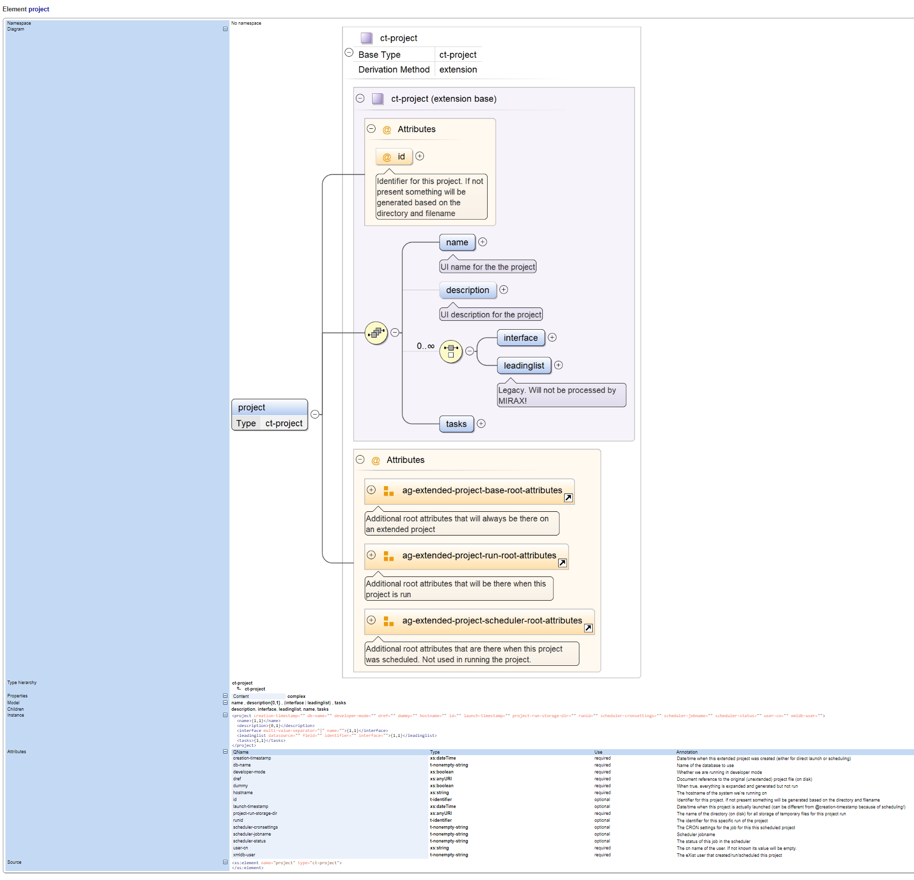

Creating a schema of some sort (e.g. XML Schema or RELAX NG, maybe with additional Schematron rules) for your XML structure is always a good idea. It helps users to ascertain they created at least syntactically correct XML. It can be used in IDEs like oXygen to get help in creating the thing. But is it also useable for end-user documentation?
There are generators out there that can turn a schema into documentation. Here is an example of some something generated by oXygen:
Figure 6. An example of (a part of) generated schema documentation by oXygen
|  |
Like software has classes, methods and type definitions, schemas have constructs like groups, types, extensions, etc. This is all there for the schema developer and maintainer: keep things consistent, don't define constructs more than once, add internal documentation by using meaningful names and make things easier to change. So a simple element might be constructed from an extended type, adding attribute groups, re-defining constructs made earlier, etc.
All this is very important and necessary, but not for the end-user. When you look for instance at the diagram oXygen generates, I think you can see the problem: way too much detail. As an end-user of the XML format you're not interested in how the structure is defined in the schema. You simply want to know the attributes and child elements, what they mean and how and when to use them.
To be fair, the oXygen documentation generator can be tuned in excruciating detail and maybe there is a setting I haven't found yet that will generate what we need. But there are two other problems lurking in the wings:
Are the annotations you write in the schema for the end-user or for the schema maintainer? You probably need both. Maybe using nifty tricks you can keep them apart, but can the documentation generator handle this? You'll also have to be very consistent and careful in creating them.
XML structure documentation more often than not needs additional narrative texts in-between things. For instance when introducing an element, provide an example or add a warning about something. This does not follow from the formal XML structure, it follows from the flow of the explanation. At this moment there is no way a schema documentation generator can cater for this.
This all is a fundamental problem: Schema documentation generators document the schema, not necessarily the resulting format. Lots of unnecessary schema innards show up and obfuscate what an end-user needs to know. You can't add additional texts. Its a bit like trying to generate Java program end-user documentation using the Javadoc pages…